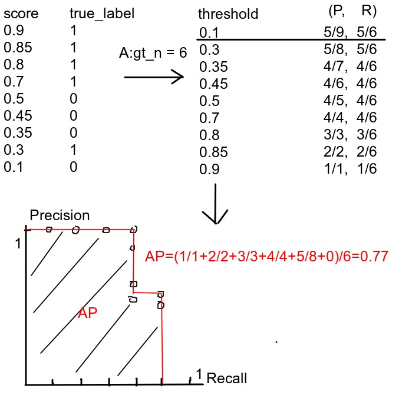

在深度学习领域，常用的评价指标：
准确率 （Accuracy），混淆矩阵 （Confusion Matrix），精确率（Precision），召回率（Recall），平均正确率（AP），mean Average Precision(mAP)，交并并（IoU），ROC + AUC，非极大值抑制（NMS）。
在了解这些指标之前，我们需要明白一下定义（通俗语言解释）：
假设被检测物体为汽车；
- TP (True Positive）：被正确检测为汽车；
- FP（False Positive）：被错误检测为汽车（实际不是汽车）；
- FN（False Negative）：未被检测为汽车，实际是汽车（错误检测）；
- TN（True Negative）：正确检测不是汽车；(基本不会使用)
请记住：P(Positive)和N(Negative)代表模型的判断结果；T(True)和F(False)评价模型的判断结果是否正确。
在图像分类任务中，判断的正确与否很好区分，在目标检测任务中，可以这样理解：
- TP (True Positive)：一个正确的检测，检测的IOU ≥ threshold。即预测的边界框(bounding box)中分类正确且边界框坐标正确的数量。
- FP (False Positive)：一个错误的检测，检测的IOU < threshold。**即预测的边界框中分类错误或者边界框坐标不达标的数量，**即预测出的所有边界框中除去预测正确的边界框，剩下的边界框的数量。
- FN (False Negative)：一个没有被检测出来的
ground truth。所有没有预测到的边界框的数量，即正确的边界框(ground truth)中除去被预测正确的边界框，剩下的边界框的数量。
1. 准确率
准确率（Accuracy），所有预测正确的样本 / 总的样本：
准确率一般用来评估模型的全局准确程度，不能包含太多信息，无法全面评价一个模型性能。
2. 精确率
精确率（precision），也称为查准率，准确率是模型只找到相关目标的能力。通俗来说，你认为的正样本，有多少猜对了（猜的准确性如何），精确率是针对我们预测结果而言的，它表示的是预测为正的样本中有多少是真正的正样本。准确率可以反映一个类别的预测正确率 。
3. 召回率
召回率（recall），也称为查全率，是模型找到所有相关目标的能力，即模型给出的预测结果最多能覆盖多少真实目标。通俗解释：正样本有多少被找出来了（召回了多少），召回率是针对我们原来的样本而言的，它表示的是样本中的正例有多少被预测正确了。
区分好召回率和精确率的关键在于：针对的数据不同，召回率针对的是数据集中的所有正例，精确率针对的是模型判断出的所有正例。
一般来说，对于多分类目标检测的任务，会分别计算每个类别的TP、FP、FN数量，进一步计算每个类别的Precision、Recall。
4. F-值
F1是基于精确率和召回率的调和平均，又称为F-Score。
5. PR曲线
准确率和召回率是互相影响的，因为如果想要提高准确率就会把预测的置信率阈值调高，所有置信率较高的预测才会被显示出来，而那一些正确正预测（True Positive）可能因为置信率比较低而没有被显示了。一般情况下准确率高、召回率就低，召回率低、准确率高，如果两者都低，就是网络出问题了。一般情况，用不同的阀值，统计出一组不同阀值下的精确率和召回率。
如果一个分类器的性能比较好，那么它应该有如下的表现：在Recall值增长的同时，Precision的值保持在一个很高的水平。而性能比较差的分类器可能会损失很多Precision值才能换来Recall值的提高。
PR曲线（Precision x Recall curve），所有precision-recall点相连形成的曲线(一般会为每个类别的预测框建立各自的PR曲线)。通常情况下，文章中都会使用Precision-recall曲线，来显示出分类器在Precision与Recall之间的权衡。
通常，均是针对一组测试集而言，因此曲线也是针对一组测试集而言。假如模型针对某一目标种类，测试集为5张图片，有以下预测结果。其中总共预测出9个目标，实际目标有6个。计算以及PR曲线绘制如下：

6. AP、mAP
平均精度（Average-Precision，AP），就是Precision-recall 曲线下面的面积，通常来说一个越好的分类器，AP值越高。
mean Average Precision(mAP)，是所有类别AP的平均值。这个mean的意思是对每个类的AP求和再求平均，得到的就是mAP的值。mAP的大小一定在[0,1]区间，越大越好。该指标是目标检测算法中最重要的一个。
7. IoU
交并比（Intersection-over-Union，IoU），是产生的候选框（candidate bound）与原标记框（ground truth bound）的交叠率，即它们的交集与并集的比值。
IoU正是表达这种bounding box和groundtruth的差异的指标。最理想情况是完全重叠，即比值为1。
8. ROC曲线
ROC（Receiver Operating Characteristic）曲线，曲线的横坐标为假正例率（FPR），纵坐标为TPR(真正例率)。
AUC (Area under Curve)：即ROC曲线下的面积，介于0.1和1之间，作为数值可以直观的评价分类器的好坏，值越大越好。
ROC曲线也需要相应的阈值才可以进行绘制，原理同上的PR曲线。下图为ROC曲线示意图，因现实任务中通常利用有限个测试样例来绘制ROC图，因此应为无法产生光滑曲线，如右图所示。
-
ROC曲线图中的四个点
第一个点：(0,1)，即FPR=0, TPR=1，这意味着FN=0，并且FP=0。这是完美的分类器，它将所有的样本都正确分类。
第二个点：(1,0)，即FPR=1，TPR=0，类似地分析可以发现这是一个最糟糕的分类器，因为它成功避开了所有的正确答案。
第三个点：(0,0)，即FPR=TPR=0，即FP=TP=0，可以发现该分类器预测所有的样本都为负样本（negative）。
第四个点：(1,1)，分类器实际上预测所有的样本都为正样本。
经过以上的分析，ROC曲线越接近左上角，该分类器的性能越好。
9. 非极大值抑制（NMS）
Non-Maximum Suppression就是需要根据score矩阵和region的坐标信息，从中找到置信度比较高的bounding box。对于有重叠在一起的预测框，只保留得分最高的那个。
- NMS计算出每一个bounding box的面积，然后根据score进行排序，把score最大的bounding box作为队列中首个要比较的对象；
- 计算其余bounding box与当前最大score与box的IoU，去除IoU大于设定的阈值的bounding box，保留小的IoU得预测框；
- 然后重复上面的过程，直至候选bounding box为空。
最终，检测了bounding box的过程中有两个阈值，一个就是IoU，另一个是在过程之后，从候选的bounding box中剔除score小于阈值的bounding box。需要注意的是：Non-Maximum Suppression一次处理一个类别，如果有N个类别，Non-Maximum Suppression就需要执行N次。